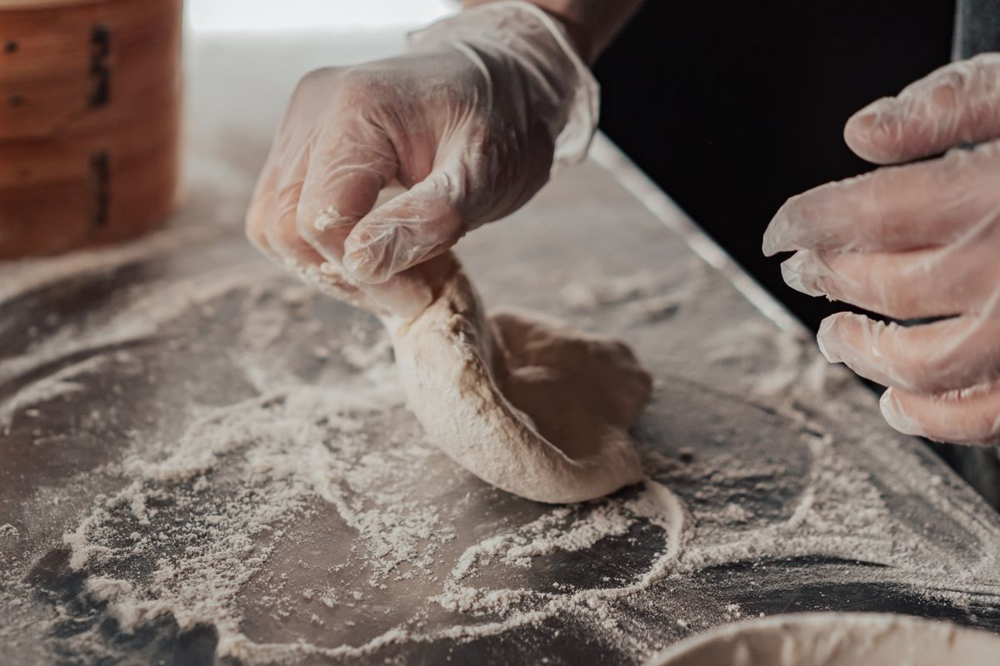
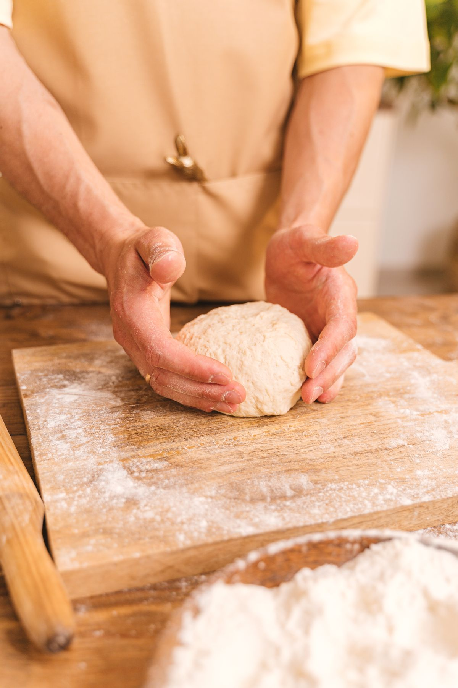

あんバター系
口コミで名前がよく挙がる、甘さと塩気の組み合わせ。
注文を受けてからバターを挟みます【要確認】
【要確認：商品名・中身・価格】
いつもの朝に、パンの楽しみを。
長野市稲里町、
ハード系から菓子パンまで。
今日のひとつを見つけに。
売り切れ次第終了 水曜定休

01 / ご来店の前に
営業時間は 8:00〜15:00 です。
午後は売り切れで品数が少なくなることがあります。
少し早めの時間に、どうぞ。
※以前の営業時間（〜19:00）が掲載されているサイトがありますが、現在は15:00までです【要確認：文言の可否】
Instagramを見る ↗当日の状況・臨時休業はInstagramでお知らせしています【要確認】
水曜日は定休日です。営業時間は8:00〜15:00（売り切れ次第終了）。
水曜定休 ／ 丸囲み：今日
定休日をもとにした目安です。臨時休業は未反映。

02 / モカブレッドについて
しっかりとした焼き色のハード系から、
おやつに選びたくなる菓子パンまで。
幅広いパンを楽しめる、という声が寄せられる
長野市南部のパン屋です。
毎日の食卓に。大切な人への手土産に。
パンを選ぶひとときも、楽しみのひとつに。
Googleマップの口コミの傾向をもとに構成しています。
2013年オープン・ご夫婦で営むお店です【要確認】
【要確認：お店の想い・シェフ紹介】
【要確認：掲載実績の表記可否】
【要確認：英字表記】
03 / パンの紹介
食事にも、おやつにも。
ラインナップは日によって変わります【要確認】
口コミで名前がよく挙がる、甘さと塩気の組み合わせ。
注文を受けてからバターを挟みます【要確認】
【要確認：商品名・中身・価格】
木の実を使ったおやつパンも、楽しみにする声があります。
【要確認：商品名・中身・価格】
しっかりしたパンに、味わいのアクセントを。
【要確認：商品名・中身・価格】
スープやいつものおかずと一緒に、食卓の真ん中へ。
【要確認：商品名・中身・価格】
イラストはイメージです。実際の商品・形状を示すものではありません。取扱い・内容は店舗への確認が必要です。
04 / ご予約・季節の楽しみ
手土産・贈り物にもどうぞ。
季節の焼き菓子については、お電話でご相談ください。
【要確認：取扱い・予約時期・価格】
05 / 営業時間とアクセス
06 / お問い合わせ
営業時間内にお気軽にご相談ください。
026-283-22318:00〜15:00（売り切れ次第終了）／水曜定休
最新情報はInstagramで ↗